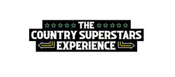

Trade Mark Journal No.2025/017 25 April 2025
UK00004157296 7 February 2025 (35,41)

- Class 35
- Promotion of sports competitions and events; Promotion services relating to esports events; Marketing services relating to esports events; Advertising services relating to esports events; Promotion of goods and services through sponsorship of sports events.
- Class 41
- Timing of sports events; Sports events (Timing of -); Organising of sporting events; Organising sporting events; Organising of sports events; Organization of sporting events; Organization of sporting events and competitions; Arranging of sporting events; Organisation of sporting events; Organising of sports competitions and events; Organisation of sporting events and competitions; Production of sporting events; Organising community sporting events; Provision of sporting events; Organization of entertainment events; Ice-skating events (Organising of -); Handicapping for sporting events; Conducting of sports events; Organising gymnastics events; Gymnastics events (Organising of -); Organization of sporting events and competitions, involving animals; Organising of sporting events, competitions and sporting tournaments; Management of events for sporting clubs; Organising of football events; Organisation of esports events; Organisation of sporting competitions and sports events; Organisation of cycling events; Handicapping services for sporting events; Organizing community sporting and cultural events; Production of esports events; Ticket information services for sporting events; Services for the organisation of sports events; Organisation of educational events; Organization of cosplay entertainment events; Arranging of educational events; Entertainment services relating to sporting events; Entertainment services in the nature of sporting events; Organising of sports competitions and sports events; Organising of sports events and of sports competitions; Organisation of automobile rallies, tours and racing events; Time recording services for sporting events; Conducting of live sports events; Organising of sports and sports events; ; Booking of sports personalities for events (services of a promoter); Provision and management of sporting events; Production of sporting events for radio; Production of sporting events for television; Ticket information services for esports events; Conducting of educational events; Production of sporting events for film; Booking of seats for shows and sports events; Conducting of live esports events; Services for the organisation of football events; Organisation of events for cultural, entertainment and sporting purposes; Entertainment services in the nature of skating events; Provision of information relating to sporting events; Ticket procurement services for sporting events; Providing facilities for sports events; Organization of animal racing events; Organising of motor racing events; Arranging and conducting of sports events; Sporting event organization ; Organisation of automobile racing events; Advisory services relating to the organisation of sporting events; Organisation of vehicle racing events; Production of esports events for television; Horse jumping events (Organising of -); Providing information on congress events; Organising of sporting activities and competitions; Organising of sporting activities or competitions; Providing facilities for sporting events, sports and athletic competitions and awards programmes; Organisation of sports events in the field of football; Organising of sporting activities and of sporting competitions; Rental of equipment for use at athletic events; Organisation of sporting activities and competitions.
LIKE IT LOVE IT LIMITED